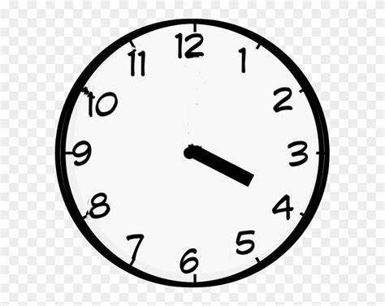
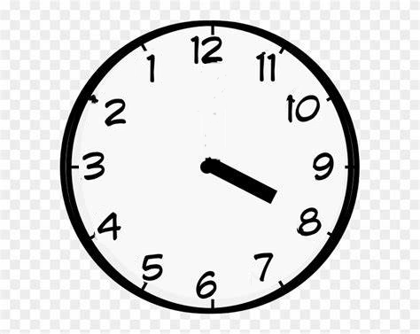

取余和取模的区别
说来惭愧,一直以来都没有真正明白取余(remainder operation)和取模(modulo operation)的区别,不是说他们计算的区别,而是用途上区别,
当然了,计算上的区别我也是不知道的,但是总有一两次会遇得到这其中所暴露的问题,所以今天就想办法理解它们的区别.
除法的含义
如果不理解它们的区别,那么在使用编程语言的 % 操作符号是很容易出问题的.
在理解它们的区别之前先问一下自己是否还记得除法的含义,很多人都知道怎么计算,但可能很多人没有仔细想过,或者说回忆除法的含义.
就说我个人的理解,假设要计算 \(a \div b\),那么它的计算结果就是在回答: \(a\) 是由多少个 \(b\) 相加而成.
这就是为什么在日常计算中不会让任何数除以 0,包括 0 本身也不能除以自己,
比如 \(a \div 0\) 就是在问 \(a\) 是由多少 0 相加而成,
如果 \(a \ne 0\), 那么无论多少个 0 相加都不会得到 \(a\);
如果 \(a = 0\), 那么结果就不是唯一的了,1 个 0 也行, 2 个 0 也行,多少个 0 都行,也就是无限个 0.
因此大部分编程语言在遇到除以 0 的计算是直接选择引发异常,有些语言比如 Javascript 则是直接给一个 Infinity (无限).
取余
"取余"还是名符其实的,这里的"余"(remainder)就是多余个数的意思.
除法并不是每次都能得到整数结果的,比如 \(3 \div 2 = 1.5\),你可能会说没有得到整数结果有什么问题吗?
那么假设这是一个生活中问题: 现在有 3 个私人教师和两个学生,要给每个学生分配相同人数的老师,
只能一个学生对应一个老师,不能一个老师对应多个学生,问平均每个学生有多少个老师.
总不能是 1.5 老师吧!?老师可是人啊.
这种 无法完全分配 的问题就衍生出了另外一个问题: 有多少个老师是多余的呢?
当然这里答案很明显是 1 了.这类问题需要用"取余"解决的问题了,我们这里用 \(rem\) 表示"取余"符号.
因此上面的分配问题可以表示成 \(3\ rem\ 2 = 1\).
再来一个问题: \(A\) 和 \(B\) 是关系很好的朋友, \(B\) 见 \(A\) 经济上有困难,于是仗义地给了 \(A\) 5 块黄金,
可 \(A\) 坚持要给 \(B\) 还钱, \(B\) 见此就是向 \(A\) 提出"条件",每次一定只能还 2 块黄金,剩下多出来的就不用还了,
请问最后 \(A\) 还欠多少块黄金是不用还的?
这里我们用负数表示 \(A\) 欠 \(B\) 的黄金数,正数表示 \(A\) 给 \(B\) 的还钱黄金数.
也就是需要计算出 \(-5\ rem\ 2\) 的结果,这个想一下就能得出结果了,\(A\) 只需要还两次钱,所以结果是 -1.
来看一下 MATLAB 对取余运算符 rem 的定义: a - b .* fix(a ./ b),
也就是 \(a - b \times fix(a \div b)\), 这里的 fix 是指向 0 取整(round toward zero).
可以再用这条公式验证上面的两个例子.
取模
相比多余个数,取模更倾向于解决那些周期结构(cyclic structures)的问题,
我个人对取模也没有一个很"一般化"的定义,很"一般化"的定义又难以理解.
因此我会用一个很通俗的例子来表达取模在我直觉中是怎样的,适合用于什么问题.
一个钟的时针,分针以及秒针的初始位置都指向 12 点刻度上,问经过了 80 分钟后分针的位置在哪个数字的刻度上.
一个小时 60 分钟, 80 分钟就是说秒针走了 \(80 \div 60 = 1 + \frac{1}{3}\) 圈,
\(\frac{1}{3}\) 圈就是 20 分钟, 因此分针位于 4 上,这个 20 就是要取的模.

Figure 1: 分针处于4上
我们这里用 \(mod\) 来表示取模符号,因此上面的求模可以表达成 \(80\ mod\ 60 = 20\).
你可能会想这个问题好像也可以用取余的角度来看: 分针跑完了几个完整圈还剩多少圈.
确实是这样, \(80 - 60 \times fix(\frac{4}{3}) = 20\),
但如果说取模和取余一样的话就大错特错了.
我们改一下时钟的刻度如下,

Figure 2: 分针处于8上
分针的旋转方向保持不变,暂且把逆转后的刻度叫做新刻度,逆转前的刻度叫做旧刻度.
在新刻度下分针逆向走了 \(80 \div -60 = -(1 + \frac{1}{3})\) 圈,分针位于 8 上,
也就说分针从 12 点位置开始按照"新顺时针"方向旋转 40 分钟才能走到旧刻度的 4 上,
对于旧刻度而言,"新顺时针"方向就是"旧逆时针"方向,也就是 -40 分钟,这个 -40 就是要取的模,所以是 \(80\ mod\ -60 = -40\).
如果用取余的方法计算呢?遗憾是结果不一样: \(80 - 60 \times fix(\frac{4}{3}) = 20\),
这点可以从取余的含义看出来,不管分针往哪个方向跑 80 分钟,最终多出的还是 \(\frac{1}{3}\) 圈.
回到取模上,模到底是什么呢?
很能一句说明白,本人总结能力有限,只能举一个例子来理解.
首先它针对的是周期性的问题,可以看作:
在一个圆边上定一个点作为起点,
\(a\ mod\ b\) 的含义就是从起点位置沿着 \(b\) 的方向(正负分别对应顺逆时针方向)运动 最少 多少才能达到运动了 \(a\) 度后所达到的位置,
而 \(|b|\) 就是一个周期,而圆的一周就是 \(360^{\circ}\);
比如说往逆时针方向走 \(361^{\circ}\) 和往同一个方向走 \(1^{\circ}\) 最终达到的位置是一样的,往反方向(顺时针)走 \(359^{\circ}\) 最终到达的位置是一样的,
从前一种情况提取出参数和结果就是 \(\begin{equation}\left\{\begin{array}{**lr**}a = -361 \\ b = -360\end{array}\right.\end{equation} \rightarrow -1\), 后一种情况则是 \(\begin{equation}\left\{\begin{array}{**lr**}a = -361 \\ b = 360\end{array}\right.\end{equation} \rightarrow 359\).
这两种情况都是很简单的,能够一样看出来,可当 \(|a|\) 越大时,就需要借助取模进行运算,
让我们来看看 MATLAB 对取模符号 mod 的定义: a - b .* floor(a ./ b),
也就是 \(a - b \times floor(a \div b)\), 这里的 floor 是指向负无穷取整(round toward negative infinity).